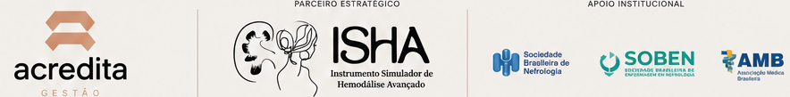
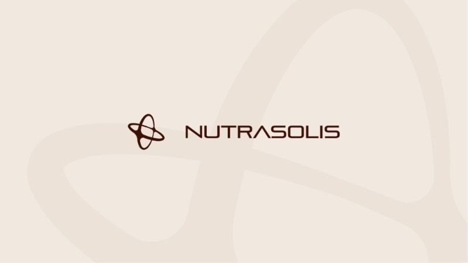
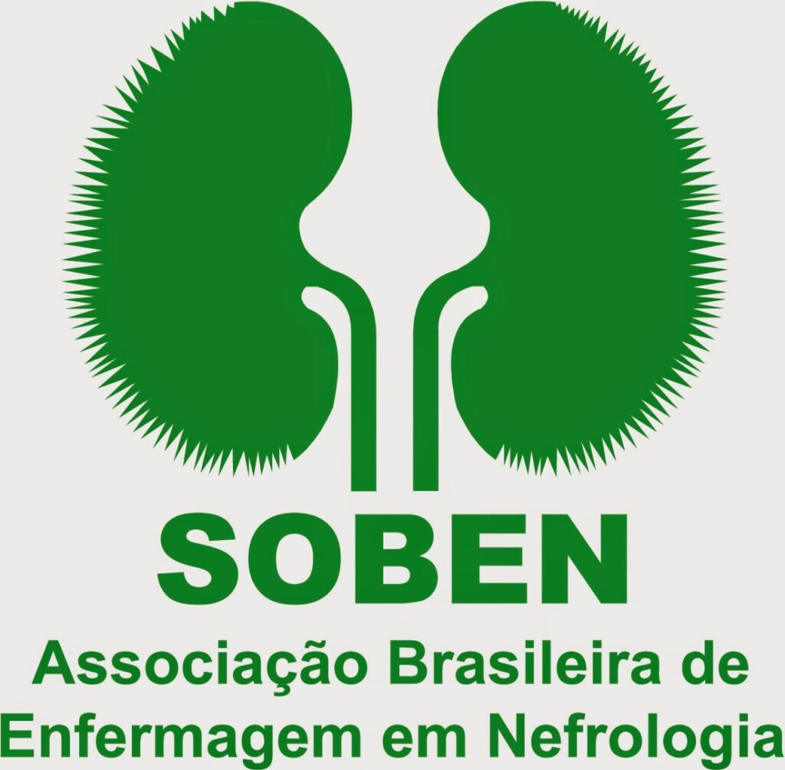

Petrolina • PE
10 e 11 de outubro de 2026
Sobre o evento
O Workshop de Nefrologia & Hemodiálise reunirá profissionais, especialistas e instituições de saúde em dois importantes polos do Nordeste para uma experiência de atualização científica, networking e fortalecimento das boas práticas no cuidado renal.
A programação será realizada em dois dias. No primeiro dia, acontecerá o Pré-Workshop, com minicursos exclusivos, oferecendo uma oportunidade de aprofundamento técnico e prático em temas essenciais da nefrologia e hemodiálise. As inscrições para os minicursos são independentes da inscrição do Workshop, permitindo que o participante escolha a modalidade que melhor atenda aos seus objetivos.
No segundo dia (domingo), será realizado o Workshop de Nefrologia & Hemodiálise, com uma programação composta por palestras, mesas de discussão e painéis conduzidos por especialistas renomados, promovendo o debate científico, a troca de experiências e a discussão das principais tendências e desafios da área.
Garanta sua vaga! As inscrições para o Pré-Workshop (Minicursos) e para o Workshop estão abertas e podem ser realizadas de forma independente, ou você pode participar dos dois dias de programação para aproveitar uma experiência completa de aprendizado, networking e desenvolvimento profissional.
Onde estaremos
10 e 11 de outubro de 2026
17 e 18 de outubro de 2026
Escolha sua cidade
Edição 01
Imersão Ishá em 10 de outubro e Workshop em 11 de outubro de 2026.
Edição 02
Imersão Ishá em 17 de outubro e Workshop em 18 de outubro de 2026.
Painéis científicos,
multidisciplinares
Programação do Workshop
Manhã
Tarde
Programação dos minicursos
Minicurso
Conteúdo exclusivo para aprofundamento técnico e prático em Nefrologia e Hemodiálise.
Acessar Imersão Ishá →Painéis científicos,
multidisciplinares
Programação do Workshop
Manhã
Tarde
Programação dos minicursos
Minicurso
Conteúdo exclusivo para aprofundamento técnico e prático em Nefrologia e Hemodiálise.
Acessar Imersão Ishá →Minicurso
Conteúdo voltado à gestão e ao desenvolvimento dos serviços de saúde.
Realização

Parcerias
Apoio


Inscrições abertas
Ainda tem dúvidas?